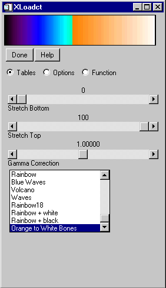

The MODIFYCT procedure updates the distribution color table file colors1.tbl , located in the \resource\colors subdirectory of the main IDL directory, or a user-designated file with a new, or modified, colortable.
This routine is written in the IDL language. Its source code can be found in the file modifyct.pro in the lib subdirectory of the IDL distribution.
MODIFYCT, Itab , Name , R , G , B [, FILE = filename ]
The index of the table to be updated, numbered from 0 to 255. If the specified entry is greater than the next available location in the table, the entry will be added to the table in the available location rather than the index specified by Itab . On return, Itab contains the index for the location that was modified or extended. The modified table can be then be loaded with the IDL command: LOADCT, Itab .
A string, up to 32 characters long, that contains the name for the new color table.
A 256-element vector that contains the values for the red colortable.
A 256-element vector that contains the values for the green colortable.
A 256-element vector that contains the values for the blue colortable.
Set this keyword to the name of a colortable file to be modified instead of the file colors1.tbl .
A derived color table created in the XPALETTE utility can be added to IDL’s list of pre-defined color tables with the TVLCT and MODIFYCT routines.
By default, TVLCT allows you to load in red, green, and blue vectors (either derived by you or imported from an image file) to load a different current color table. TVLCT also has a GET keyword. When the GET keyword is set, TVLCT returns the red, green, and blue vectors of the current color table back to you. Using this you can obtain the red, green, and blue vectors of the previously derived color table.
| 1. | Obtain the red, green, and blue vectors of the current color table after performing the steps in the XPALETTE utility: |
TVLCT, red, green, blue, /GET
The MODIFYCT routine uses these vectors as arguments. Now you can use MODIFYCT to add this new color table to IDL’s list of pre-defined color tables.
| 2. | Add this modified color table to IDL’s list of pre-defined color tables and display results: |
MODIFYCT, 41, 'Orange to White Bones', $
red, green, blue
| 3. | Display the results with XLOADCT: |
XLOADCT
The modified color table has been added to IDL’s list of pre-defined color tables as shown in the following figure.
|
 |
|
Original |
Introduced |